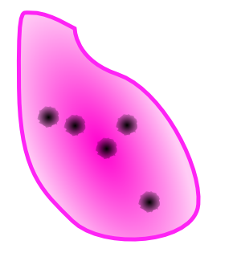
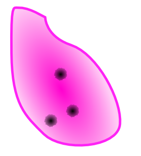

Chapter 6 ジャングルと鉄Jungle Steel
- 1緊急会議/An Urgent Meeting
-
Information
- 60/85
- 5:00:00
Process
スティグマ「ブラキオン」の除去
Guide
スティグマ「ブラキオン」の初処置。
ブラキオンについて
ブラキオンはコアから触手の先端に向けて毒素を送ろうとする。毒素は徐々に先端に向かっていき、先端に到達するとバイタルを著しく低下させる。
先端組織に血清を投与すると先端組織が沈静化する。この状態ならメスで切り離した後にピンセットで摘出することができる。全ての先端組織の摘出に成功すると初めてブラキオンにダメージが入る。
先端組織が沈静化もしくは切り離された状態や摘出後の状態であっても、毒素が先端まで行き届いてしまうと全ての先端組織が復活してしまう。
これを防ぐには毒素の伝達を阻止する必要がある。ピンセットで触手に存在する「節」の部分をつまんで潰すことにより毒素の伝達をリセットすることができる。
4段階ダメージを与えることができればブラキオンは消滅する。
対処のコツ
全体を見渡しながら常に全ての触手の一番奥の節を潰した状態を保って先端組織に血清を注射していく。
とにかく慌てないことが重要で、多少時間がかかってもいいので確実に血清を投与していく。血清の投与は一度で沈静化させる必要は無い。2回もしくは3回に分けても構わない。
わざと放置する
少々難度が高い方法だが、精神的負担を減らすことができる。
血清を投与していない先端組織に毒素が行き着いてもバイタルが減るだけである。
そこで触手が一番短い部分をわざと放置する。バイタルは減るが、他の2本ないし3本に集中することができる。他の摘出が完了してから改めて全ての触手を相手にすればよい。
もちろん、コアが収縮したらバイタルを回復させるのを忘れないように。
Special Bonus
条件 倍率 MISS判定無し x1.3 【2分/2分20秒/2分30秒】以上残して手術終了 x1.2 MAX CHAIN【10/15/18】以上 x1.2 先端組織の復活回数【3/2/1】回以下 x1.3 Operation Rank
ランク Easy Normal Hard C ～1899 ～2599 ～3799 B 1900～2099 2600～2899 3800～4099 A 2100～2199 2900～3199 4100～4299 S 2200～ 3200～ 4300～4399 XS - - 4400～ Movie
 Speedrun 2h49m7s part 9 of 16")
- 2赤道クルルマ/Culuruma
-
Information
- 75/90
- 5:00:00
Process
- 腫瘍の摘出
Guide
腫瘍は一定時間毎に赤と青交互に色が切り替わる。
青の状態なら安全に処置できるが、赤の時に処置しようとするとガスが発生してしまう。 ガス発生時に他に処置痕が残っていると、さらに腫瘍が発生してしまうので注意が必要。
また、メスで切り取って、摘出可能な状態でも色の変化は続いたままなので注意したい。
赤から青に切り替わるの確認したら、摘出まで一気にやってしまうのがよいだろう。もちろん一度に一つずつ慎重に摘出すること。
Special Bonus
条件 倍率 MISS判定無し x1.3 【3分50秒/4分/4分5秒】以上残して手術終了 x1.2 バイタルを【50/60/70】以下に下げない x1.2 ガス発生回数【5/3/1】回以下 x1.3 Operation Rank
ランク Easy Normal Hard C ～2399 ～3799 ～4599 B 2400～2499 3800～3999 4600～4999 A 2500～2599 4000～4199 5000～5399 S 2600～ 4200～ 5400～5699 XS - - 5700～ Movie
")
- 3病める村/An Ailing Village
-
Information
- 65/80 60/80 55/80
- 10:00:00
Process
- スティグマ「ソーマ」の除去
- スティグマ「ブラキオン」の除去
- スティグマ「オープス」の除去
Guide
スティグマ3連戦。ソーマ、ブラキオン、オープスの順となる。
以前とほぼ同じなので、どうしても勝てない時はそれぞれのステージを再挑戦して慣れておくといいだろう。
Special Bonus
条件 倍率 MISS判定無し x1.3 【2分40秒/3分15秒/3分20秒】以上残して手術終了 x1.2 先端組織の復活回数【4/2/1】回以下 x1.2 腫瘍を破裂させない x1.3 Operation Rank
ランク Easy Normal Hard C ～7399 ～9299 ～9999 B 7400～7599 9300～9599 10000～10999 A 7600～7799 9600～9999 11000～11999 S 7800～ 10000～ 12000～12999 XS - - 13000～ Movie
- 4クルルマ・メタル/Culurium
-
Guide
開始直後カウンターショックとなる。止めるポイントが通常よりかなり手前にあるので注意する。
基本的にこれまで行った手術と大して変化は無いが、心細動が頻繁に発生するだけでなくバイタルの減少が早いので、常にバイタルを高く保っておかないと、カウンターショック前にバイタルが尽きてしまうので注意する。
ショットガンの弾痕に人口膜を載せる際、血だまりが隣接していると置くことができないので、あらかじめ吸っておくこと。
また、全部で4箇所の内出血が存在する。バイタル減少が大きいので早めに処置しておこう。
Special Bonus
条件 倍率 MISS判定無し x1.3 【2分/3分/3分20秒】以上残して手術終了 x1.2 MAX CHAIN【40/50/60】以上 x1.2 カウンターショックの回数【12/9/8】回以下 x1.3 Operation Rank
ランク Easy Normal Hard C ～2699 ～3399 ～4799 B 2700～2799 3400～3799 4800～5099 A 2800～2999 3800～4099 5100～5399 S 3000～ 4100～ 5400～5599 XS - - 5600～ Movie
 Speedrun 2h49m7s part 10 of 16")
- 5戦火/The Heat of Battle
-
Information
- 10/65、55/65、45/65、30/65、50/65
- 10:00:00
Process
- 一人目 火傷の処置
- 二人目 ライフル及びショットガンによる損傷の処置
- 三人目 胸部の損傷の処置
- 四人目 胸部骨折の処置
- 五人目 心臓の損傷の処置
Guide
カドゥケウス恒例の5人切り。3人まで処置が完了すれば、残り時間が0になってもゲームオーバーにならないので、待つのも手である。
一人目
火傷の治療となるが、2-5と違い、時間経過で通常の火傷が炭化してしまう。しかし、炭化の状態からは一切出血しない。冷却材の投与から一気に治療してしまおう。
二人目
ショットガン及びライフルによる損傷の治療。内部ではバイタルの減りが早いので、常にバイタルに気をつけながら処置する。
三人目
内部をある程度処置すると患部上部に内出血が発生するのでエコーで探してメスを入れよう。
メスを入れるとバイタルが結構減るので、高く保つこと。
四人目
胸部の骨折の治療。折れた骨を抜くたびに新たな傷が発生するので、抜く前にバイタルをある程度回復させておくこと。
五人目
内出血がどんどん破裂してあっという間にバイタルが0になってしまう。
初期配置の5つの内出血は、どれかを縫合まで処置すると新たに裂傷が生成される。これは血だまりつきのように見えるが、実際は血だまりは存在しないので素早く縫合する。
そして裂傷と同時に3つの内出血が追加されるので、破裂する前にバイタルと相談してメスを入れよう。もう無理だと判断したら、全てが破裂するまで回復薬を投与し続けて、破裂をやり過ごそう。
慣れないうちはこの五人目で超執刀を使うことを強く勧める。ここだけ非常に死亡率が高い。
安全に抜けるならば、初期の5つの内出血はメスだけ入れておいて、バイタルを最大まで回復する。そして、一つだけ内出血を縫合まで処置したら、追加された内出血にメスを入れる。この時点で破裂によるダメージは無くなるので、後はバイタルを回復しながら一つずつ処置していこう。
初期の内出血
追加の内出血
Special Bonus
条件 倍率 MISS判定無し x1.3 【40秒/1分/1分20秒】以上残して手術終了 x1.2 MAX CHAIN【150/200/250】以上 x1.3 残り時間有りで5人の手術終了 x1.2 Operation Rank
ランク Easy Normal Hard C ～14999 ～15999 ～17999 B 15000～15499 16000～16999 18000～18999 A 15500～15999 17000～17999 19000～19999 S 16000～ 18000～ 20000～20999 XS - - 21000～ Movie
- 6血塗られた取引/Signed in Blood
-
Information
- 25/40、25/40
- 10:00:00
Process
- 一人目に腎臓を移植
- スティグマ「ケイル」の除去
- 二人目に腎臓を移植
- スティグマ「ケイル・オニュクス」の除去
Guide
腎臓の移植を行いながらスティグマを相手にしなければならない。
腎臓は静脈（青）・門脈（黄）・動脈（赤）・胆管（緑）に繋ぐたびにバイタル最大値が85まで上昇する。しかし、静脈に繋いだ瞬間にスティグマが現れるので、実質バイタル50で戦うことになるだろう。
一人目
ケイル2体、ケイル2体、融合ケイルの順に出現する。
相手はケイルだけなのでバイタルにさえ気をつければさほど難しい相手ではないはず。
二人目
ケイルとオニュクスが同時に出現する。
オニュクスを探しながらケイルの相手をしようとするとかなり絶望的だが、ケイルの初期配置は1体のみなので、基本的にケイルは無視してオニュクスの相手をしよう。潜伏する場所が膵臓のみなので探すのは容易なはずだ。
オニュクスに血清を投与した後など、時間が空いた時にケイルの生成した裂傷を縫合してバイタルを回復しよう。
とにかくオニュクスを優先して倒すことが重要。
Special Bonus
条件 倍率 MISS判定無し x1.3 【2分/2分30秒/3分】以上残して手術終了 x1.2 MAX CHAIN【80/90/95】以上 x1.2 オニュクスに攻撃をさせない x1.3 Operation Rank
ランク Easy Normal Hard C ～8799 ～8999 ～9999 B 8800～8999 9000～9499 10000～10999 A 9000～9099 9500～9999 11000～11499 S 9100～ 10000～ 11500～12499 XS - - 12500～ Movie
 Speedrun 2h49m7s part 11 of 16")
- » Chapter 7